[소식] 9월 24일丨성난 조수를 물리치고 풍파를 잠재우다——신규 수호 콘텐츠 【제해당】
기사 제목과 본문을 자연스러운 한국어로 옮겼습니다. 이미지 블록은 제공되지 않아 해당 번역 항목은 비워 두었습니다.

‘곤붕이 물을 치다’, ‘놀란 파도는 눈처럼 희다’와 같은 시구로 읊어지기 전부터, 전당강의 조수는 모든 것을 쓸어버릴 듯한 기세로 ‘나찰강’이라는 드높은 명성을 떨쳤습니다.
오늘날에도 파도 소리는 우레 같아 사람들이 강가에 다투어 나와 바라보고, 조수는 산처럼 솟아올라 천하에 비길 데 없는 장관을 이룹니다. 바다를 막는 둑 하나가 성난 파도와 서리 같은 물보라를 도시의 불빛과 갈라놓으며 항저우의 도시 구조를 이루었습니다. 이곳의 평온은 수많은 전당 주민이 굳은 의지와 끈기로 대대로 지켜 온 것입니다.
내일 공개되는 신규 수호 콘텐츠 【제해당】에서 협객은 전당 주민들이 조수에 맞서는 모습을 직접 경험할 수 있습니다. 물은 문명을 키우면서도 거듭 단련합니다. 살아남으려면 지혜와 용기가 모두 필요합니다.
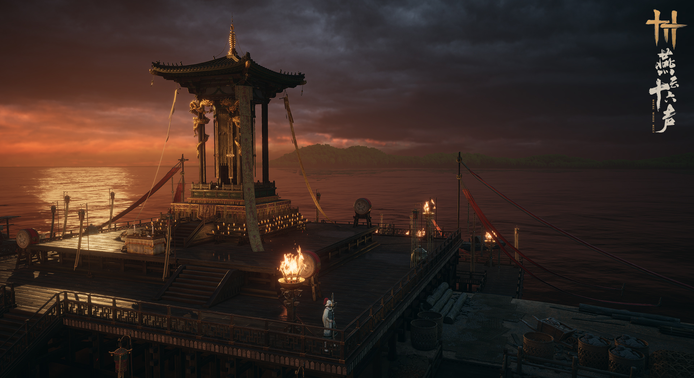
*사전 연구 단계의 효과 시연이며, 최종 공개 내용을 기준으로 합니다.
바다를 막는 둑을 처음 쌓을 때, 강물은 밤낮으로 쉬지 않고 밀려왔습니다. 둑을 완성하면 무너지고, 무너지면 다시 쌓기를 반복했고, 둑을 고치던 수많은 사람이 조수 속에 묻혔습니다. 조수 피해가 가라앉기도 전에 소문이 먼저 퍼졌습니다. “이 땅을 차지하려는 자는 조수에게 삼켜질 것이다.” 사람들은 모두 조신이 허락하지 않는다고 여겼습니다. 순식간에 사람들의 마음은 불안에 휩싸였습니다.
누군가는 말했습니다. 신의 뜻이라면 왜 다시 다투겠습니까? 짐을 꾸려 강가를 떠나 이 땅을 조수에게 돌려주는 것도 살아가는 한 방법일 수 있습니다.
또 어떤 이들은 둑을 보수하는 일이 곧 집을 지키는 일이라고 말합니다. 조수 피해가 단 하루도 그치지 않는다면 비옥한 논밭은 강의 밀물에 삼켜지고, 사람들은 거센 물결에 목숨을 잃습니다. 해마다 이런 일이 되풀이되는데 어찌 평온한 삶을 이어 갈 수 있겠습니까?
강가에서는 의견이 분분했고 서로 다른 주장만 맞섰습니다. 결론을 내지 못할 바에야 조수의 뜻을 물어 ‘이 둑을 계속 고칠지 말지’를 조신에게 맡기는 편이 낫지 않겠습니까? 전당에 평온을 가져오는 일은 하늘의 뜻을 따르는 것일까요, 아니면 사람이 할 일을 다하는 것일까요?
이 ‘조수에게 묻는’ 일은 결코 잔잔하게 끝나지 않을 것입니다. 거센 파도가 강둑을 치고 파도 소리가 우레처럼 울릴 때라야 사람들의 본모습이 드러납니다.
지난 전투에서 협객이 맞선 것은 대개 칼과 검의 대결이거나 마음가짐에 대한 시련이었습니다. 생사를 건 싸움이라 해도 결국 ‘형체가 있는 다툼’이었습니다. 하지만 이번 적은 형체 없는 천지의 거대한 힘입니다.
조수가 하늘 끝에서 밀려와 순식간에 평지가 강물로 변할 수 있습니다. 집이 무너지고 나무가 쓰러져 가로놓입니다. 바로 직전까지 있던 살길도 물결 속에서 순식간에 사라질 수 있습니다.
자신을 구하는 일만으로도 몹시 어렵습니다. 협객이 무너지는 건물 사이로 물 위를 빠르게 내달리고 머리끝까지 차오르는 탁한 물결 속에서 목숨을 건진다 해도, 혈육의 몸으로 한 사람, 열 사람은 구할 수 있을지언정 강물의 조수를 어떻게 막겠습니까?
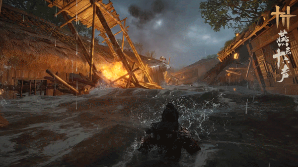
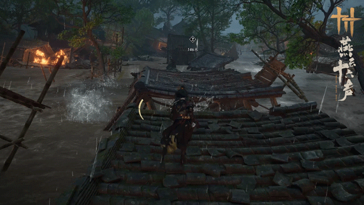
*사전 연구 단계의 효과 시연이며, 최종 공개 내용을 기준으로 합니다.
관문 안에서 협객은 시시각각 거대한 조수의 위력과 마주합니다. 성난 조수가 강기슭을 덮쳐 둑을 무너뜨리고 바위를 깨뜨립니다. 조신이 노했다는 소문 또한 강 위를 흐르는 또 하나의 암류처럼 끊임없이 사람들의 마음을 뒤흔듭니다.
사람이 조수 앞에서 나무를 흔드는 하루살이와 같은 것은 사실이며, 힘에는 분명 한계가 있습니다. 그러나 지혜로 물길을 터서 조수를 다스릴 수 있고, 여럿이 힘을 합쳐 맞설 수도 있습니다. 대바구니 하나와 돌 하나로 조수의 기세를 꺾고 흐름을 이끌며, 마음과 힘을 하나로 모아 미약한 힘을 모으면 견고한 방벽을 세울 수 있습니다. 문명이 빛나는 위대한 순간을 협객과 함께 지켜보겠습니다.
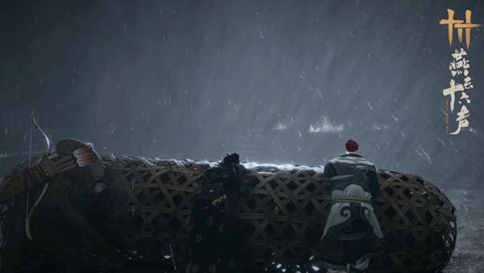
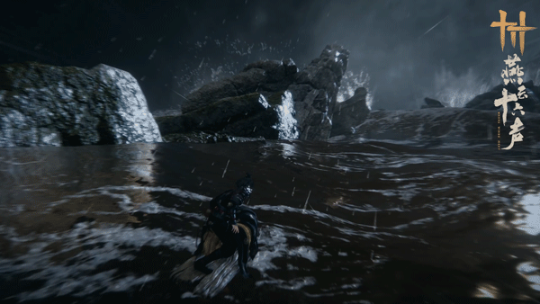
*사전 연구 단계의 효과 시연이며, 최종 공개 내용을 기준으로 합니다.
번개가 치고 천둥이 울리며 조수는 산처럼 솟아오릅니다. 거대한 파도 깊은 곳에서는 또 다른 숨 막히는 악전이 협객을 기다립니다.
이 인물은 비와 구름의 힘을 지녀 손짓만으로 물을 끌어모아 조수를 일으키고 구름을 모아 기세를 키울 수 있습니다. 그러나 ‘조수를 다스릴 때도 강의 흐름을 따라야 한다’는 오랜 지혜처럼, 형세를 살펴 흐름을 이끄는 것이 난국을 타개하는 가장 좋은 방법입니다. 상대가 천지의 기세를 빌려 압박한다면 협객도 천지의 힘으로 맞섭니다. 길흉을 따지지 않고 과감히 행동할 때 하늘의 뜻은 마침내 사람의 손에 달리게 됩니다.
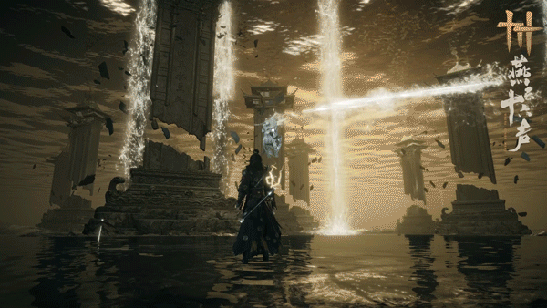
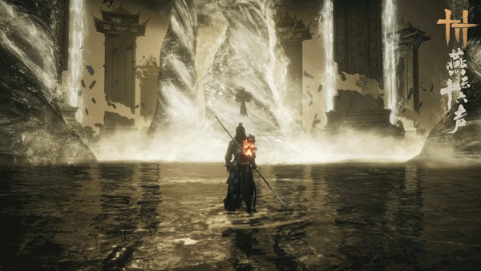
*사전 연구 단계의 효과 시연이며, 최종 공개 내용을 기준으로 합니다.
중국의 오천 년 역사에서 물을 다스리는 일은 전당강에만 국한되지 않습니다. 사람이 발을 딛고 사는 땅은 본래 강과 함께 생겨났습니다. 강물은 흙을 쌓아 땅을 이루고, 홍수와 조수는 되풀이되며 땅을 떠오르게도 가라앉게도 합니다. 사람들은 물을 다스리는 방법을 끊임없이 모색하며 강과 조수와 더불어 살아가는 가운데 고향을 지킬 길을 찾았습니다.
천 년을 이어 온 뜻이 세상에 평온을 가져옵니다. 조수가 거세게 밀려와도 사람의 의지는 꺾이지 않습니다. 오랜 세월 둑을 쌓아 삶의 터전을 지키고 조수에 굴복하지 않았던 중국의 치수 영웅들에게 짧은 영상으로 경의를 표합니다——
원문에서 영상 보기 ↗원본 영상 · 한국어 자막 없음
원문에서 영상 보기 ↗원본 영상 · 한국어 자막 없음
특별히 감사드립니다:
국가재해감재센터, 중국수리수전과학연구원.
안내:
자연재해 등의 이야기 장면을 표현하기 위해,
이 영상은 실제 인물의 스튜디오 촬영과 AI 특수 효과를 결합해 제작했습니다.
신규 수호 콘텐츠 【제해당】을 비롯해 500분이 넘는 스토리 체험, 완성된 항저우 지역, 새로운 학우 등 주요 콘텐츠가 모두 내일 협객을 찾아옵니다.
모레는 중추절입니다. 비단처럼 맑은 달빛은 오늘 밤 더욱 밝습니다. 연운십육성의 협객이 억 명을 돌파한 이때, 온 세상의 억만 협객을 초대해 함께 달을 바라보며 같은 달빛을 누리고자 합니다.
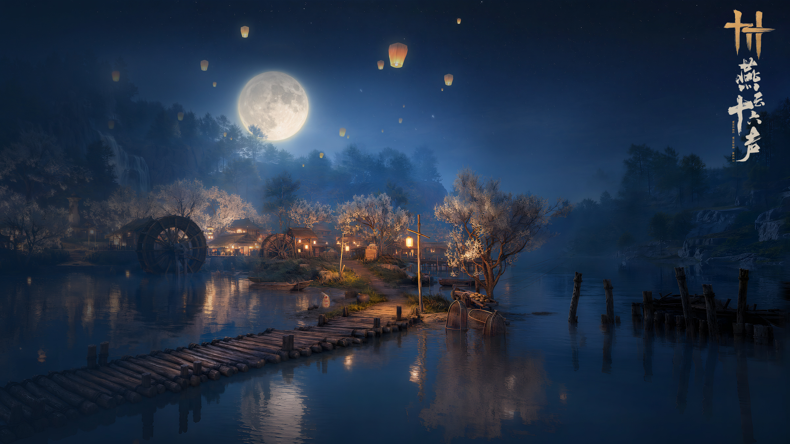
*사전 연구 단계의 효과 시연이며, 최종 공개 내용을 기준으로 합니다.
중추절인 9월 25일 0시부터 10월 2일 5시까지 협객은 게임 내 이벤트 장소에서 긴 바람을 타고 높이 올라갈 수 있습니다. 바람은 귓가에, 달은 어깨 위에 머뭅니다. 정상에 오르면 둥근 달이 하늘에 걸리고 맑은 달빛이 물처럼 흐릅니다. 손을 뻗으면 그 빛을 떠낼 수 있을 듯합니다——중추절 밤, 밝은 달과 가까이 머물러 보세요.
달구경 장소를 방문하면 장식품 【보름달 바퀴】, 은은한 소리·귀속, 여운의 소리 등 선물도 받을 수 있습니다!
어제 처음 공개된 세트 【금소옥】 등의 외형을 먼저 선보였습니다. 또한 이번 주에는 중추절 기념 세트 【옥계산산】과 「화명·옥진양음」 세트 【꽃 사이로 보다】도 함께 출시됩니다——
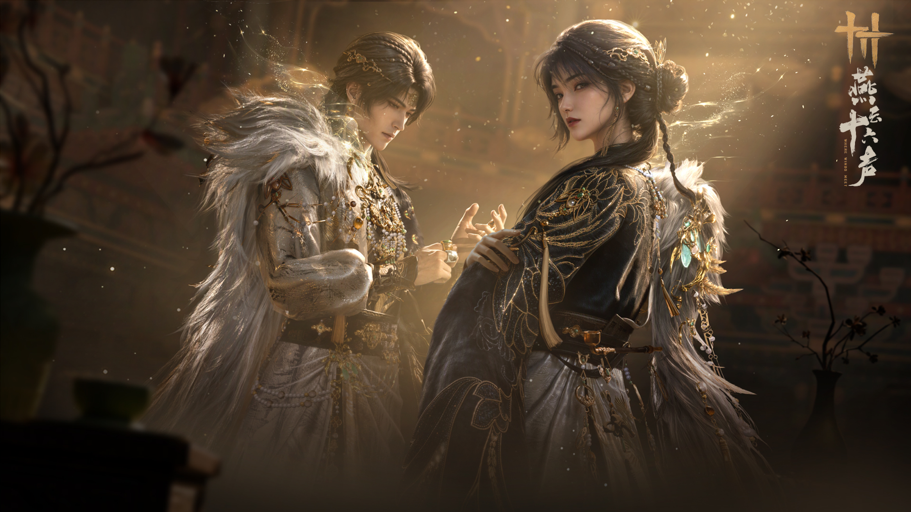
중추절 기념 세트
【옥계산산】
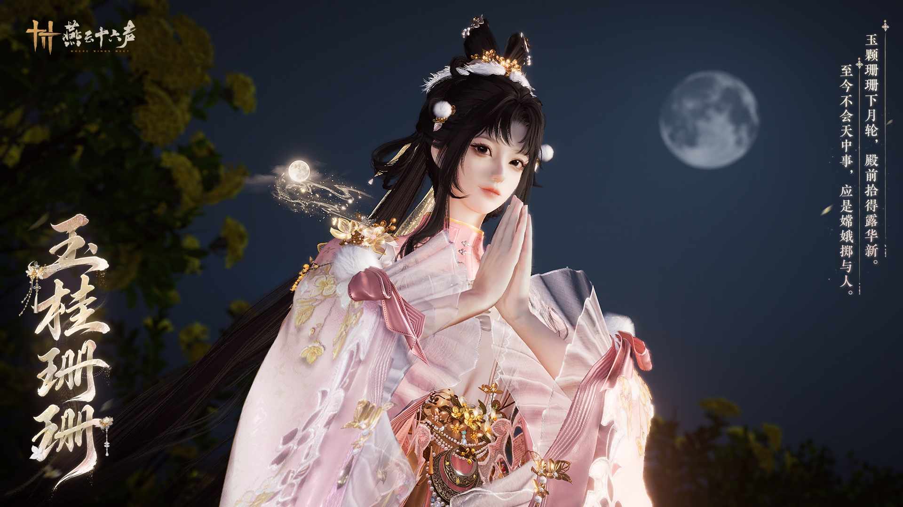
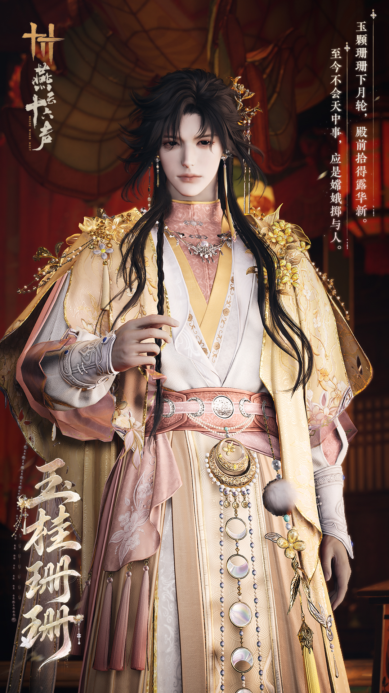
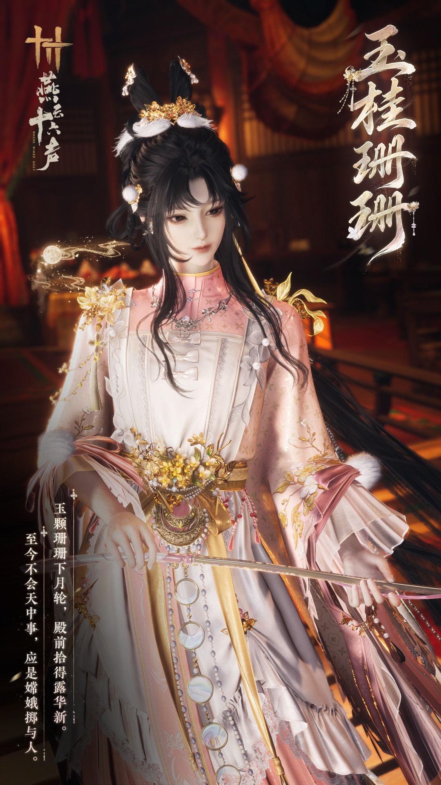
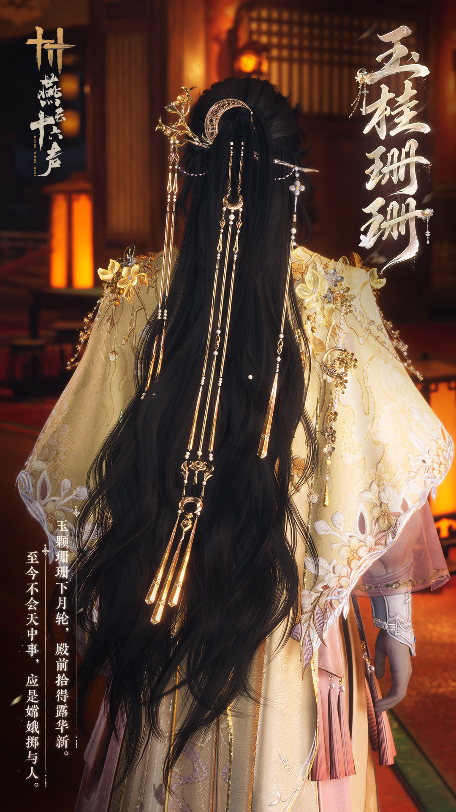
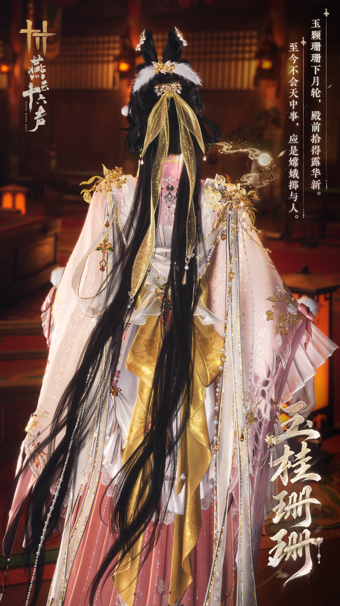
*사전 연구 단계의 효과 시연이며 최종 공개 내용을 기준으로 합니다. 남녀 의상에 같은 효과가 적용됩니다.
옥 같은 알갱이가 달 아래 영롱하게 빛나고, 궁 앞에서 주운 이슬은 새롭구나. 하늘 가운데 무슨 일이 있었는지 지금껏 모르겠으나, 항아가 사람들에게 던져 준 것이리라.
달 아래 피어난 금목서에서 착안한 세트로, 달빛 같은 흰색과 부드러운 분홍색, 옅은 금색이 어우러져 산뜻하고 화사합니다. 남성 의상은 긴 도포가 옥처럼 단정하고, 양쪽 어깨에는 금목서가 만개해 속세를 벗어난 풍모를 더합니다. 허리 장식은 달의 모양이 바뀌는 모습을 담아 고급스러우면서도 속되지 않습니다. 머리의 달 장식과 금 장식이 서로 빛나고, 몸을 돌리면 긴 머리와 장식 끈이 함께 펼쳐져 신선 같은 맑은 기품을 더합니다.
여성 의상은 두 겹으로 올린 머리 모양에 흰 털 장식을 달아 옥토끼의 귀 끝을 닮았습니다. 금실로 선을 긋고 계수나무 꽃무늬를 수놓아 온몸에 가을 정취를 담았습니다. 허리에는 비단 띠를 두르고 꽃을 모아 풍성하게 장식했으며, 구슬은 반짝입니다. 어깨 한쪽에는 금목서가 비스듬히 달려 은은한 향이 감돕니다. 신선 같은 기운이 움직이는 곳마다 속세의 티끌이 묻지 않습니다.
중추절 기념 세트 【옥계산산】은 9월 24일 버전 업데이트 후부터 10월 24일 5시까지 기간 한정으로 판매됩니다. 협객은 「상점」에서 【장명주】 2580개로 구매할 수 있습니다. 세트는 상의와 하의를 분리해 착용하고 염색할 수 있으며, 【걸이 장식】, 【머리 장식】, 【귀 장식】, 【장식품】, 【주인공 프로필 사진】이 함께 제공됩니다.
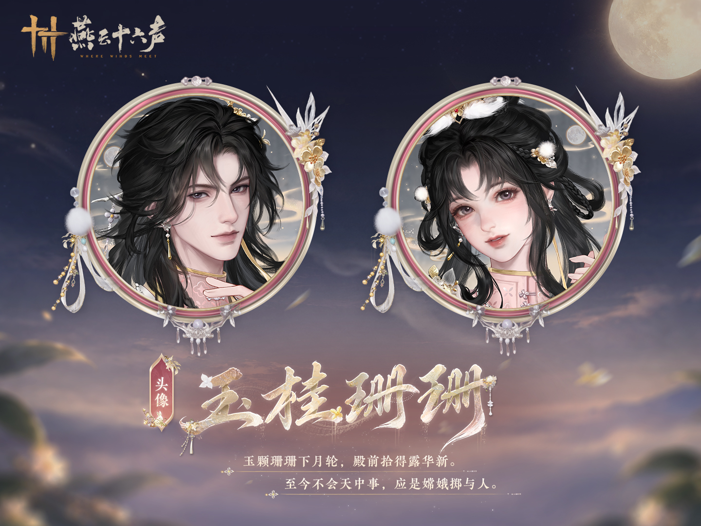
*사전 연구 단계의 효과 시연이며, 최종 공개 내용을 기준으로 합니다.
신규 헤어스타일
【순화】
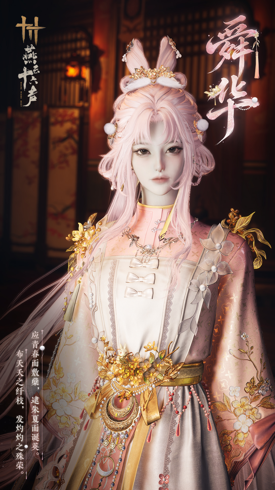
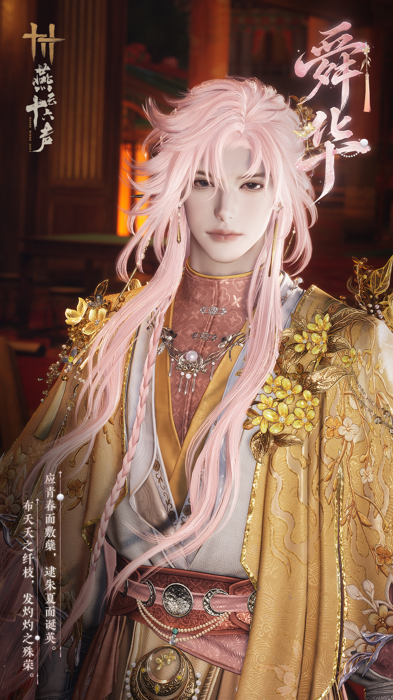
*사전 연구 단계의 효과 시연이며, 최종 공개 내용을 기준으로 합니다.
청춘을 만나 새싹을 틔우고, 초여름에 이르러 꽃을 피우네. 가늘고 여린 가지를 펼치고, 눈부시게 빼어난 꽃을 피우네.
신규 헤어스타일 【순화】는 9월 24일 버전 업데이트 후 기간 한정 90일 동안 판매됩니다. 협객은 「화명 상점」에서 【팔음규】 1개로 교환할 수 있습니다. 외형 염색이 가능하며 주인공의 움직이는 프로필 사진이 함께 제공됩니다.
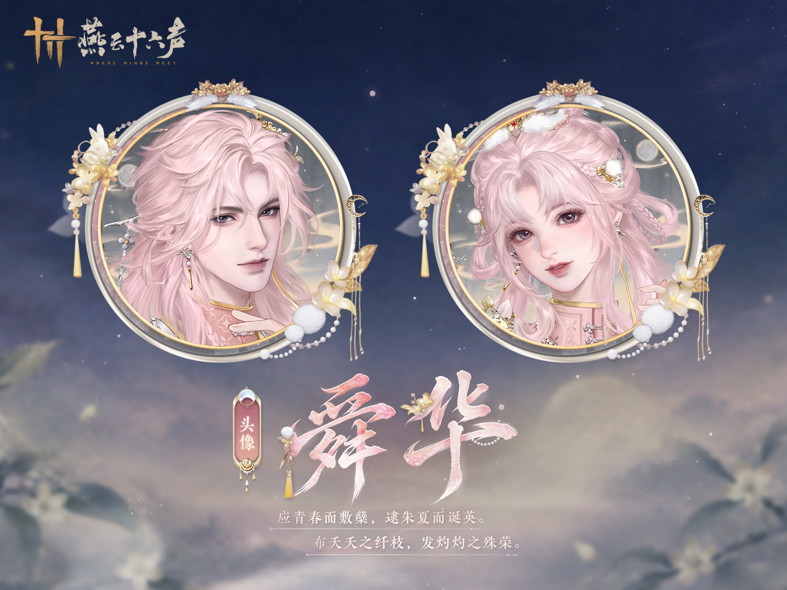
*사전 연구 단계의 효과 시연이며, 최종 공개 내용을 기준으로 합니다.
「화명·옥진양음」 세트
【꽃 사이로 보다】
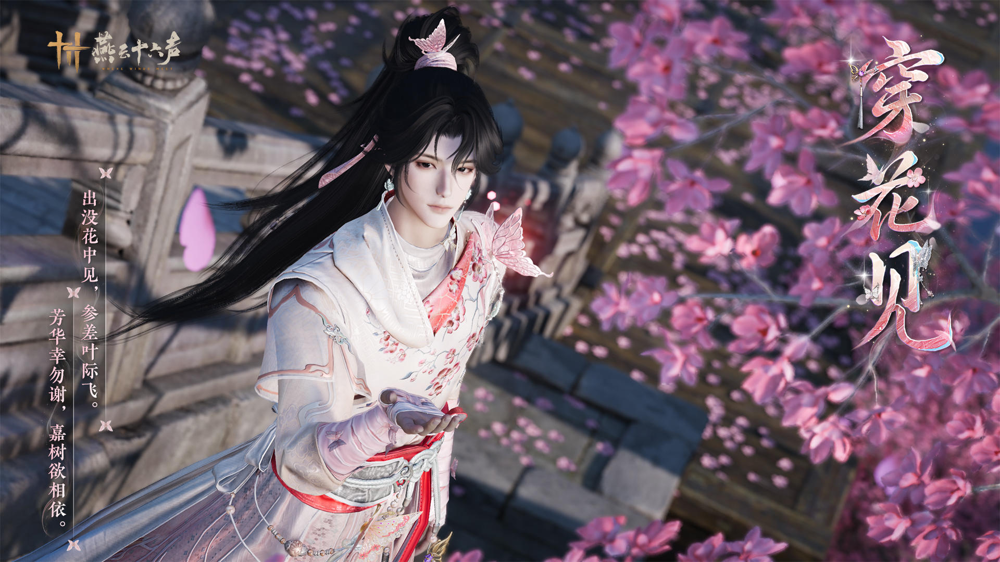
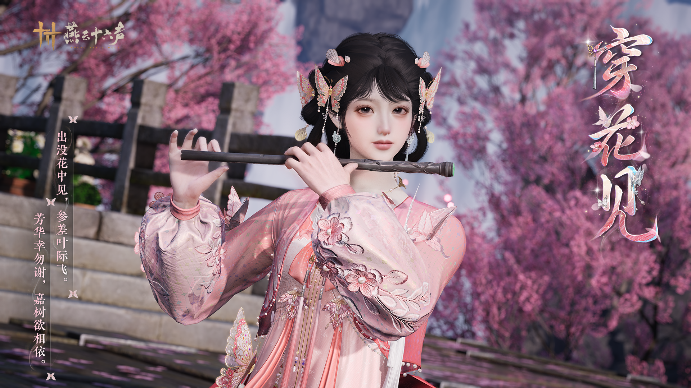
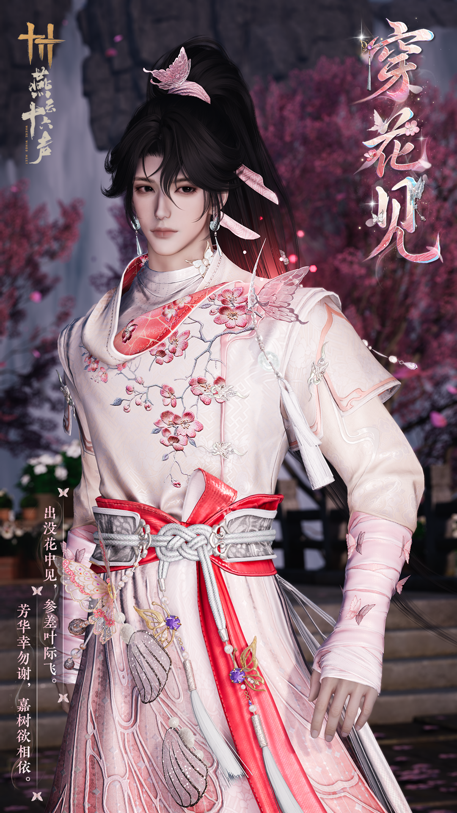
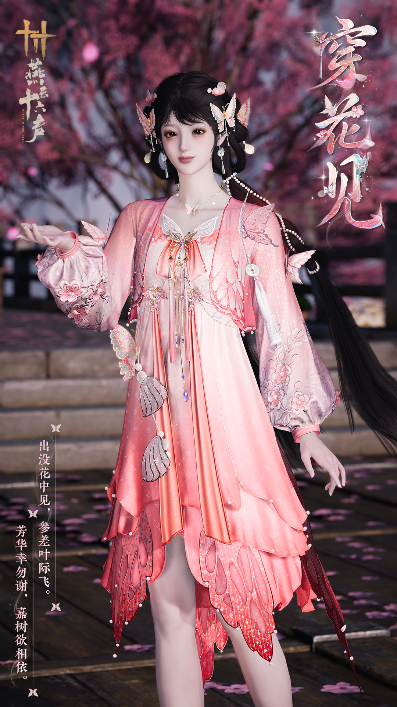
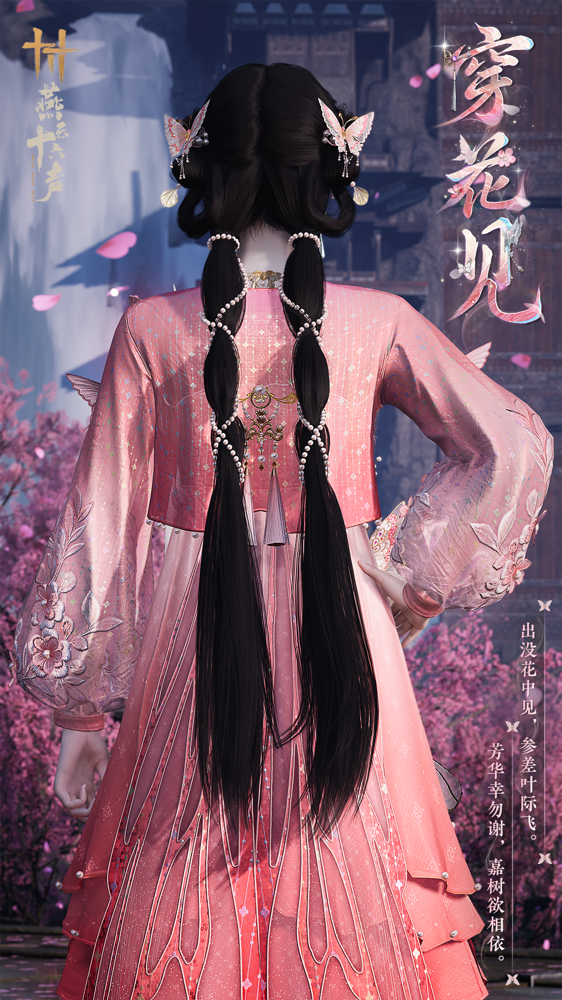
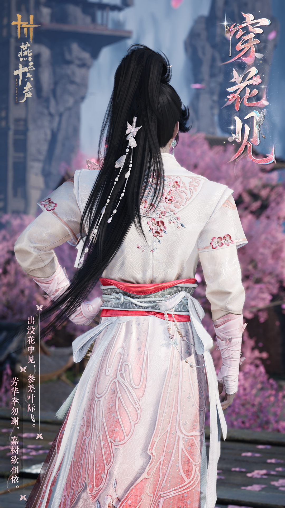
*사전 연구 단계의 효과 시연이며, 최종 공개 내용을 기준으로 합니다.
꽃 속에 나와 모습을 드러내고, 들쭉날쭉한 잎 사이를 날아다니네. 꽃다운 시절이 지지 않기를, 좋은 나무 곁에 기대어 살기를 바라네.
여성 의상은 복숭아꽃과 자두꽃이 막 피어나는 분홍빛에서 흰빛으로 이어지는 색을 담았습니다. 가슴 앞의 리본 매듭이 깃을 여며 나비가 날개를 접고 내려앉은 듯합니다. 옷에 반짝이는 점들은 아직 마르지 않은 아침 이슬과 같고, 치맛자락은 꽃잎 모양으로 겹겹이 재단해 멀리서 보면 반쯤 펼친 나비 날개처럼 보입니다. 걸을 때마다 치맛자락이 나부껴, 나비가 꽃 사이를 나는지 꽃이 나비를 받치는지 아득해집니다.
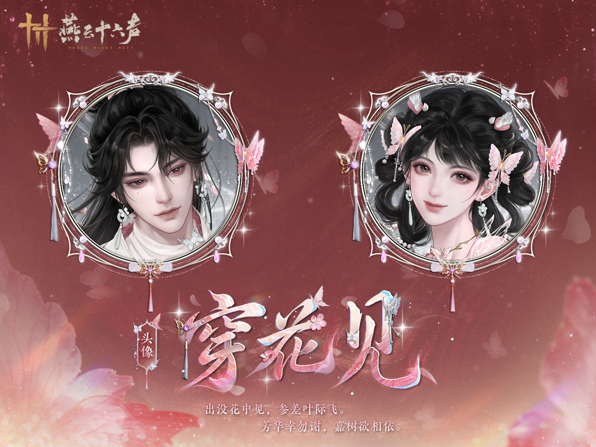
*사전 연구 단계의 효과 시연이며, 최종 공개 내용을 기준으로 합니다.
남성 의상은 흰색을 바탕으로 어깨와 등까지 이어지는 화려한 꽃무늬를 수놓고, 어깨에는 분홍 나비가 내려앉았습니다. 붉은색과 먹빛 회색을 겹쳐 허리를 묶어 움직임이 단정합니다. 옷자락에는 나비 날개 무늬를 넣고 가장자리에 꽃가지를 장식해, 바람이 불면 무늬와 색이 흐르듯 움직입니다. 머리를 높이 묶고 나비 비녀를 관처럼 꽂았습니다. 팔뚝에는 단단히 끈을 감았으니, 꽃을 감상하는 이의 멋과 강호인의 단정함을 함께 담았습니다.
신규 헤어스타일
【입방비】
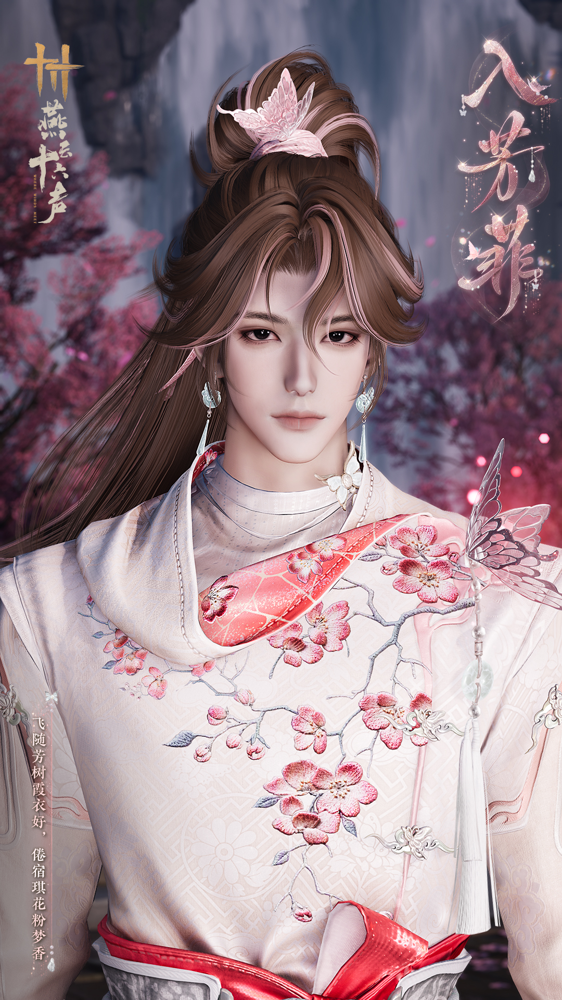
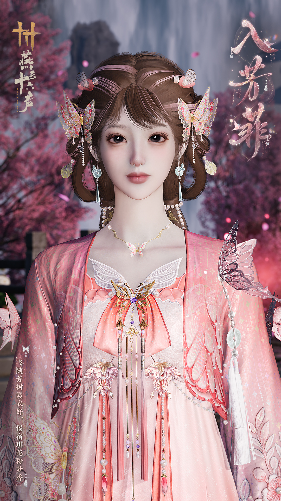
*사전 연구 단계의 효과 시연이며, 최종 공개 내용을 기준으로 합니다.
꽃나무 사이를 나는 모습은 노을빛 옷처럼 곱고, 지치면 아름다운 꽃에 깃들어 분홍빛 꿈속 향기에 잠드네.
9월 24일 버전 업데이트 후부터 12월 25일 5시까지 「화명·옥진양음」에서 「남려상화」 시즌이 열립니다. 여운의 소리를 사용해 화명을 진행하면 일정 확률로 세트 【꽃 사이로 보다】, 헤어스타일 【불류향】, 절세 보상 헤어스타일 【입방비】를 획득할 수 있습니다. 수량이 한정된 【우의잔계도】, 【몽염갑】, 【은은한 소리·귀속】도 획득할 수 있습니다. 이번 세트 【꽃 사이로 보다】는 「염색」과 「재단·제작」 기능도 함께 열립니다.
시즌 보상 목록은 시즌마다 최대 300회까지 뽑을 수 있습니다. 최대 150회 뽑기만으로 모든 시즌 한정 외형을 획득할 수 있으며, 300회를 모두 뽑으면 수량 한정 희귀 아이템 보상을 전부 획득할 수 있습니다.
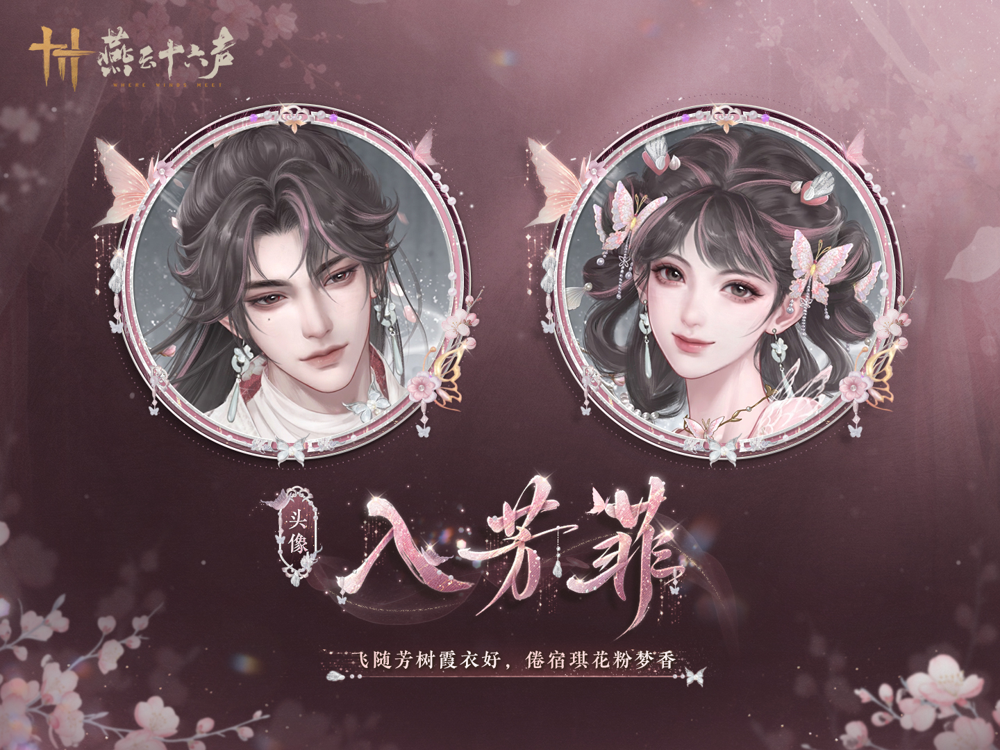
신규 이벤트
「강호 바둑」 오로권 개방
내일 업데이트에서는 【도진허】, 【강호 바둑】, 【맹주 쟁탈전】, 【다마기】 등의 플레이 방식에도 큰 변화가 찾아옵니다. 자세한 내용은 협객 여러분이 게임 내 공지에서 확인할 수 있습니다.
아울러 「강호 바둑」 오로권이 정식으로 열립니다. 9월 24일 버전 업데이트 후부터 12월 25일 5시까지 협객은 「강호 바둑」에 참여해 오로권 경험치를 얻고 레벨을 올릴 수 있습니다. 바둑말 승리 축하 효과 【연수하】, 기연 명광 【수청류】, 연계 난간 【상선약수】, 이모티콘 【들썩이는 토끼】 등의 보상도 무료로 획득할 수 있습니다.
협객은 68위안으로 정예 앵무새 편을 해금해 작은 바둑 협객 【날아오르는 음악 토끼】와 해금 혜택 【바둑말 마음 계산】을 얻을 수 있습니다. 이 혜택으로 「강호 바둑」 대국 중 상점에서 자신이 보유한 바둑말의 남은 수량을 더 편리하게 확인할 수 있습니다. 레벨을 올리면 착수 효과 【균천몽】, 장식품 【날아오르는 음악 토끼】, 프로필 테두리 【그리운 말】 등의 보상도 추가로 받을 수 있습니다.
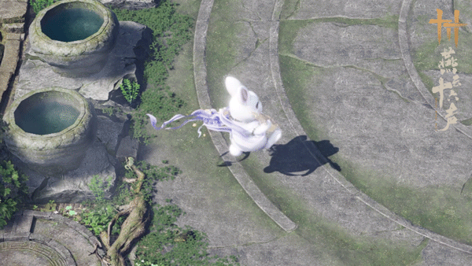
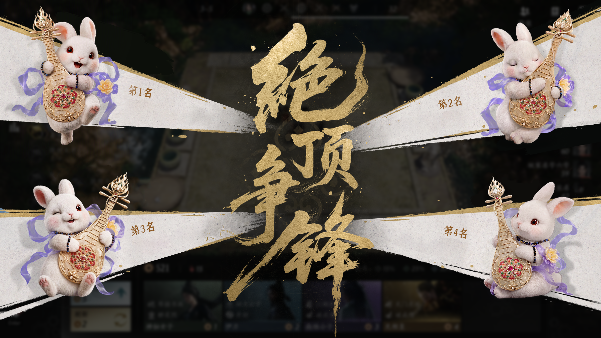
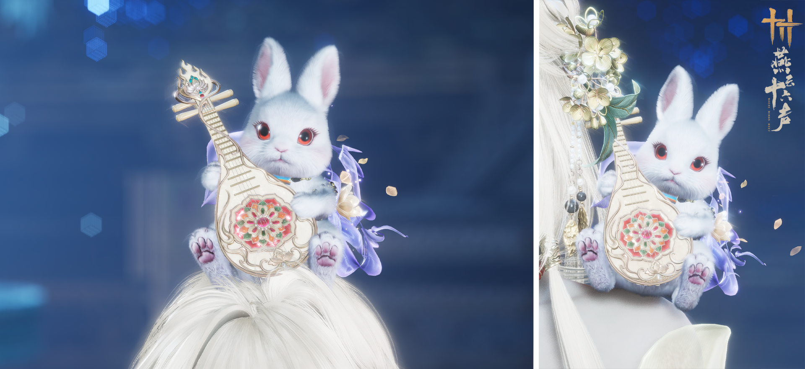
*이번 얼굴 꾸미기 출처 협객: 지*, 망*, 경*신
내일 업데이트 분량이 많으니 협객은 원활한 게임 접속을 위해 미리 사전 다운로드를 완료하는 것을 권장합니다.
또한 협객 여러분께 Microsoft PC Manager 설치를 권장합니다. 가속 기능으로 하드웨어 자원을 정리하고 불필요한 프로세스를 종료할 수 있습니다. 그래픽 카드 드라이버를 최신 상태로 유지하고 게임을 SSD에 설치하는 것도 성능과 게임 경험을 효과적으로 개선하는 방법입니다.
조수 소리가 가까워지고 모든 준비가 끝났습니다. 협객 여러분과 더 넓은 강호로 나아갈 날을 기다립니다!